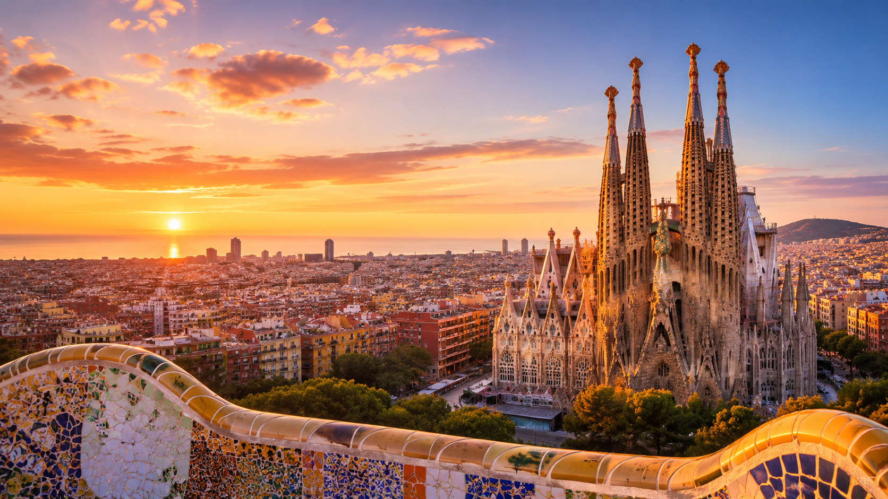
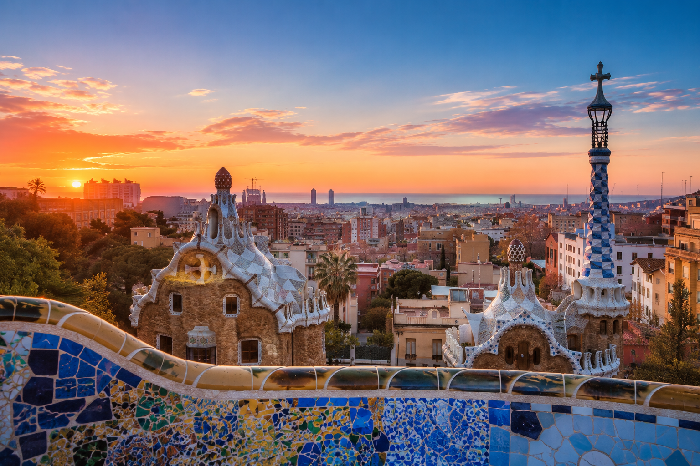
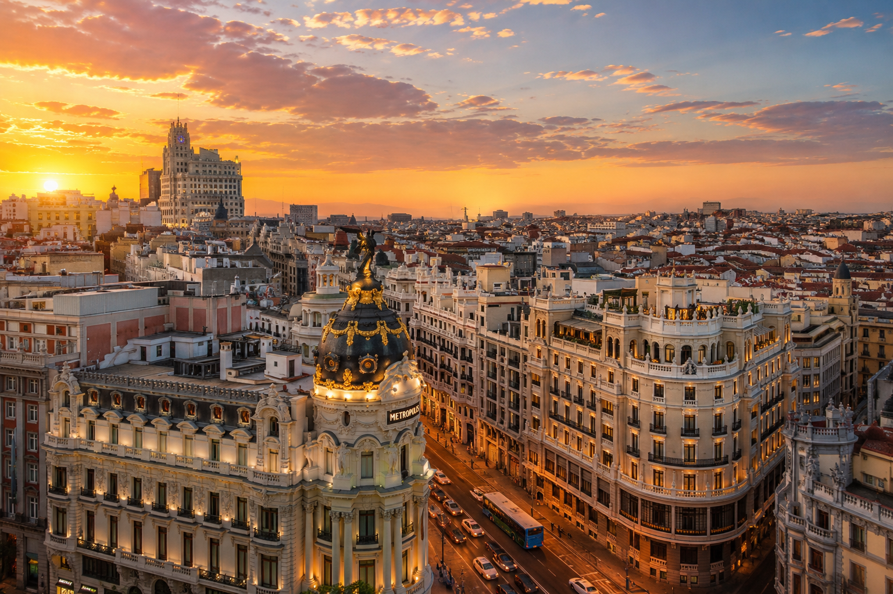
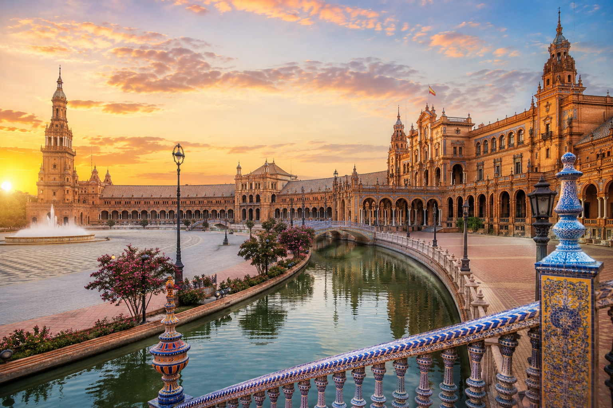

Spain
스페인은 유럽 남서부 이베리아반도에 위치한 나라로, 풍부한 역사와 문화를 자랑합니다. 세계적인 건축물과 따뜻한 지중해성 기후, 열정적인 축제로 많은 여행객들이 찾는 인기 여행지입니다.

Barcelona
바르셀로나는 스페인 북동부에 위치한 대표적인 관광 도시입니다. 사그라다 파밀리아 성당과 구엘 공원은 바르셀로나를 대표하는 명소입니다. 예술, 역사, 지중해의 풍경이 어우러져 많은 여행객들에게 사랑받습니다.
Madrid
마드리드는 스페인의 수도로 정치·경제·문화의 중심지입니다. 마드리드 왕궁과 프라도 미술관 등 역사와 예술을 대표하는 명소가 많습니다. 현대적인 도시 분위기와 전통적인 스페인 문화가 조화를 이룹니다.


Seville
세비야는 스페인 남부 안달루시아 지방의 중심 도시입니다. 플라사 데 에스파냐와 세비야 대성당은 대표적인 관광 명소입니다. 플라멩코의 본고장으로 열정적인 스페인 문화를 느낄 수 있습니다.